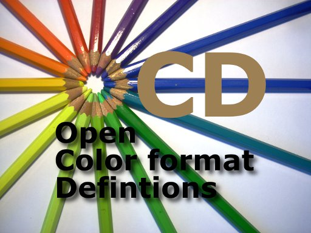

|
 |
OCD is a set of Open Color format Definitions.
Color formats are used in everything from BLTers to video codecs, and from cameras to displays. But although
there are plenty of common formats, the definition of the code specifying them is never the same.
OCD attempts to solve this problem. It provides logical color format codes, and
is extensible.
|
ocd.h contains the Open Color format Defintions.
OCD was designed to allow a single 32-bit word (int) to specify the
color format. The color format is specified as an enumeration. The
enumeration values are constructed using bitfields.
OCD breaks off a chunk of those 32 bits to specify a vendor ID. With
this, OCD can allow vendors with very unique formats to obtain their own vendor
ID and specify any of 16 million formats of their own. Minimum sharing
here, but maximum flexibility.
The power of OCD lies in the shared vendor ID. The
OCDFMTDEF_VENDOR_ALL vendor ID indicates that the common set of definitions is
being used. And this set of definitions is designed to specify pretty much
any reasonably common color format in use today.
When OCDFMTDEF_VENDOR_ALL is chosen, the remaining 24 bits of the format are
sub-divided into bitfields used to describe the format.
A set of enumeration values are already provided with predefined names.
But using the bitfields below, new combinations can be constructed. These
combinations are already legal, but they just have not been given names.
The naming conventions of the predefined formats are based on their byte
ordering, so they are not endian-dependent. The exceptions are the 16-bit
packed formats, which are little-endian.
The following bitfields only apply to the
OCDFMTDEF_VENDOR_ALL color formats.
The first field specifies the color space. Currently there are five
color spaces defined, but there is room for three more if the need arises:
- Monochrome - OCDFMTDEF_CS_MONO
- Look-Up Table - OCDFMTDEF_CS_LUT
- RGB - OCDFMTDEF_CS_RGB
- YCbCr (a.k.a. YUV) -
OCDFMTDEF_CS_YCbCr
- Alpha - OCDFMTDEF_CS_ALPHA
Once the color space has been selected, the remaining bits depend on that
choice.
This field specifies the standard being used for this color space.
Currently, this field is only defined for the YCbCr color space:
- ITU-R BT.601 -
OCDFMTDEF_STD_ITUR_601_YCbCr
- ITU-R BT.709 -
OCDFMTDEF_STD_ITUR_709_YCbCr
- Full Scale -
OCDFMTDEF_FULLSCALE_YCbCr
We believe that this field will be used to add linear format support in the
very near future.
When there is no alpha included with a format, but the color components don't
fill up the container, the remainder of the bits must be filled with something
when written. When the OCDFMTDEF_FILL_EMPTY_1
flag is not set, they are filled with 0. When the flag is set, they are
filled with 1.
The OCDFMTDEF_ALPHA bit indicates that the
format includes an alpha channel along with the main color components.
Formats with alpha can have their color components pre-multiplied by the
alpha component or not. When the
OCDFMTDEF_NON_PREMULT bit is set, the color components are not
premultiplied by the accompanying alpha. When the bit is not set, the
color components are already multiplied by the alpha.
Some formats can be subsampled. At this point, only subsampled YCbCr is
supported.
- No subsampling -
OCDFMTDEF_SUBSAMPLE_NONE
- 4:2:2 subsampling -
OCDFMTDEF_SUBSAMPLE_422_YCbCr
- 4:2:0 subsampling -
OCDFMTDEF_SUBSAMPLE_420_YCbCr
- 4:1:1 subsampling -
OCDFMTDEF_SUBSAMPLE_411_YCbCr
Subsampling can have different equivalent positions relative to the pixels.
Vertical subsampling positions are consistent, so the following are supported to
control the horizontal subsampling position:
- OCDFMTDEF_SUBSAMPLE_HORZ_ALIGNED - subsamples are aligned with first pixel (e.g. MPEG-2
spec)
- OCDFMTDEF_SUBSAMPLE_HORZ_CENTERED
- subsamples are centered between the pixels (e.g. MPEG-1
spec)
NOTE: It is encouraged that users of OCD be generous when handling
subsampling positions. Allowing misaligned subsampling is preferable to
complete failure.
To support applying alpha values to the individual components of other color
spaces, the alpha color space can have more than one alpha value per pixel.
This field specifies how many:
- OCDFMTDEF_ALPHA_COMPONENTS_1 - pixel contains 1 alpha value (default)
- OCDFMTDEF_ALPHA_COMPONENTS_2
- pixel contains 2 alpha values
- OCDFMTDEF_ALPHA_COMPONENTS_3
- pixel contains 3 alpha values; suitable for RGB
manipulation (e.g. FreeType/ClearType)
- OCDFMTDEF_ALPHA_COMPONENTS_4
-- pixel contains 4 alpha values
The layout values, in conjunction with the reversed and left-justified
modifiers, specify how the pixel components are placed into memory. All
non-RGB/YCbCr formats are packed.
- OCDFMTDEF_PACKED - pixel
components are sequential in memory, defaulting to RGB or CbCr
order, right justified
- OCDFMTDEF_DISTRIBUTED -
pixel components that don't fill the container are evenly
distributed within the container (e.g. 32 bits of ARGB in a
64-bit container is distributed 8 bits every 16 bits: xAxRxGxB)
- OCDFMTDEF_2_PLANE_YCbCr -
for subsampled formats only, Y plane is followed by subsampled
interleaved CbCr plane
- OCDFMTDEF_3_PLANE_STACKED -
pixel components are divided into planes that are sequential in
memory
-
OCDFMTDEF_3_PLANE_SIDE_BY_SIDE_YCbCr - for subsampled
formats only pixel components are divided into planes, with the
non-subsampled component followed by the subsampled components
stored side-by-side (lines interleaved)
OCDFMTDEF_REVERSED indicates that the order
of the color components is the opposite of the defaults. For RGB formats,
this means BGR. For YCbCr formats, this means CrCb.
OCDFMTDEF_LEFT_JUSTIFIED indicates that the
color components are shifted to the left, as opposed to the default of shifting
to the right.
Some examples for OCDFMTDEF_REVERSED and
OCDFMTDEF_LEFT_JUSTIFIED:
- Packed RGB: x,R,G,B is the default byte order
- x,B,G,R is the format if
OCDFMTDEF_REVERSED
is set
- R,G,B,x is the format if
OCDFMTDEF_LEFT_JUSTIFIED is set
- B,G,R,x is the format if
OCDFMTDEF_REVERSED
and
OCDFMTDEF_LEFT_JUSTIFIED are set
- Packed YCbCr 4:2:2: U,Y,V,Y is the default byte order
- V,Y,U,Y is the format if
OCDFMTDEF_REVERSED
is set
- Y,U,Y,V is the format if
OCDFMTDEF_LEFT_JUSTIFIED is set
- Y,V,Y,U is the format if
OCDFMTDEF_REVERSED
and
OCDFMTDEF_LEFT_JUSTIFIED are set
- 3-Plane YCbCr 4:2:2 or 4:2:0: The default is the Y
plane, followed by the Cb plane and then the Cr plane. The
Cb and Cr planes have half of the stride of the Y plane.
- If
OCDFMTDEF_REVERSED is set, the Cb and Cr
planes are reversed.
-
OCDFMTDEF_LEFT_JUSTIFIED has a special
case for this layout. When set, it
indicates that the Cb and Cr planes have the
same stride as the Y plane, and the Cb and Cr
data is shifted to the left.
- If both
OCDFMTDEF_LEFT_REVERSED and
OCDFMTDEF_LEFT_JUSTIFIED are set, the Cb
and Cr planes are reversed and double width.
- 2-Plane YCbCr 4:2:2 or 4:2:0: The default is the Y
plane, followed by the CbCr interleaved plane, with the same
stride as the Y plane.
- OCDFMTDEF_REVERSED
swaps the Cb and Cr components.
The container field indicates the total size of all the bits of the color
components of a color format. This does not include the alpha component,
if it is present.
- OCDFMTDEF_CONTAINER_8BIT -
Indicates the container is 8 bits. When the pixel
component size is 4 bits or less, multiple pixels are stored in
the container.
- OCDFMTDEF_CONTAINER_16BIT -
Indicates the container is 16 bits. When the pixel
component size is less than 16 bits, the remaining bits are
available to be used as an alpha channel.
- OCDFMTDEF_CONTAINER_24BIT -
Indicates the container is 24 bits. When the pixel
component size is less than 24 bits, the remaining bits are
available to be used as an alpha channel.
- OCDFMTDEF_CONTAINER_32BIT -
Indicates the container is 32 bits. When the pixel
component size is less than 32 bits, the remaining bits are
available to be used as an alpha channel.
- OCDFMTDEF_CONTAINER_48BIT -
Indicates the container is 48 bits. When the pixel
component size is less than 48 bits, the remaining bits are
available to be used as an alpha channel.
- OCDFMTDEF_CONTAINER_64BIT -
Indicates the container is 64 bits. When the pixel
component size is less than 64 bits, the remaining bits are
available to be used as an alpha channel.
TThe component size field specifies the total number of bits in the color
components, not including the alpha component. (It is specified in the
code with one subtracted.)